右建物、三池港駅。左建物、三池事業所鉄道課事務所。（提供写真） 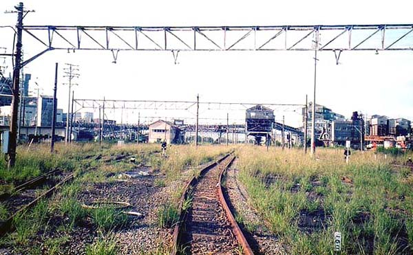 （提供写真） 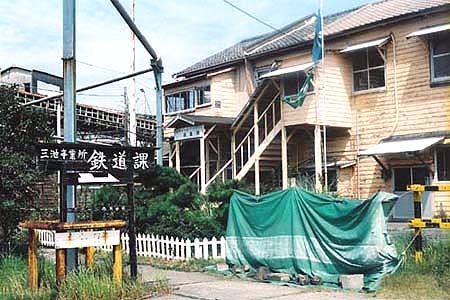 三池事業所鉄道課（平成9年8月29日撮影） 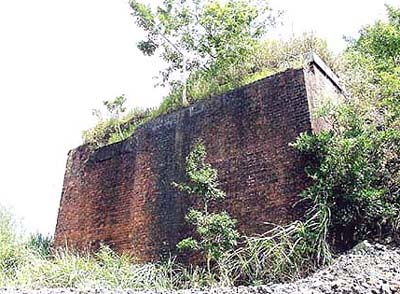 三池鉄道橋台(2002年7月28日撮影) 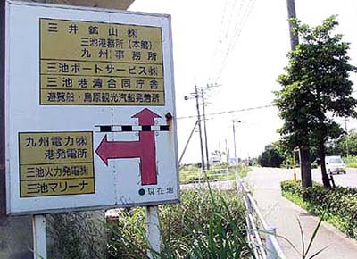 (2002年7月28日撮影) 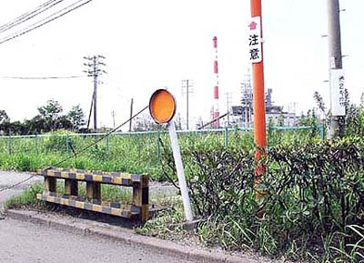 港２号踏切跡(2002年7月28日撮影)
（提供写真） 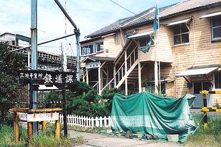 三池事業所鉄道課（平成9年8月29日撮影） 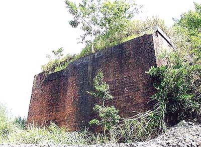 三池鉄道橋台(2002年7月28日撮影) 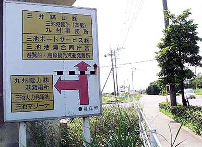 (2002年7月28日撮影) 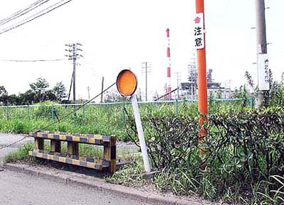 港２号踏切跡(2002年7月28日撮影)
三池事業所鉄道課（平成9年8月29日撮影） 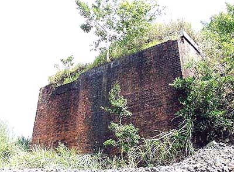 三池鉄道橋台(2002年7月28日撮影) 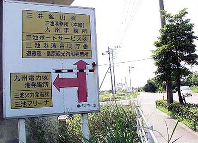 (2002年7月28日撮影) 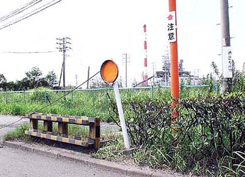 港２号踏切跡(2002年7月28日撮影)
三池鉄道橋台(2002年7月28日撮影) 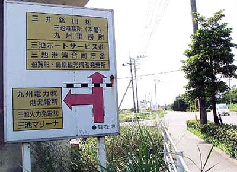 (2002年7月28日撮影) 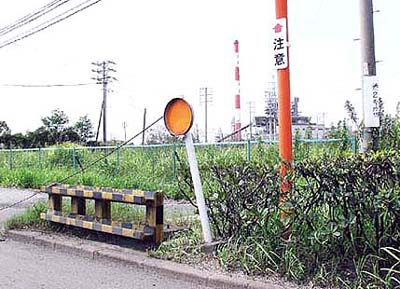 港２号踏切跡(2002年7月28日撮影)
(2002年7月28日撮影) 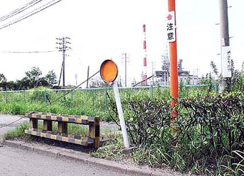 港２号踏切跡(2002年7月28日撮影)
港２号踏切跡(2002年7月28日撮影)